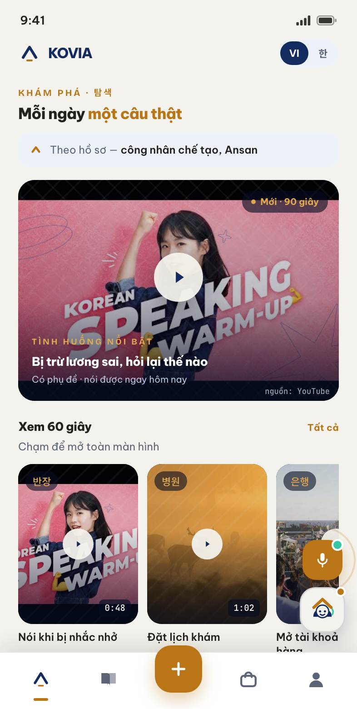
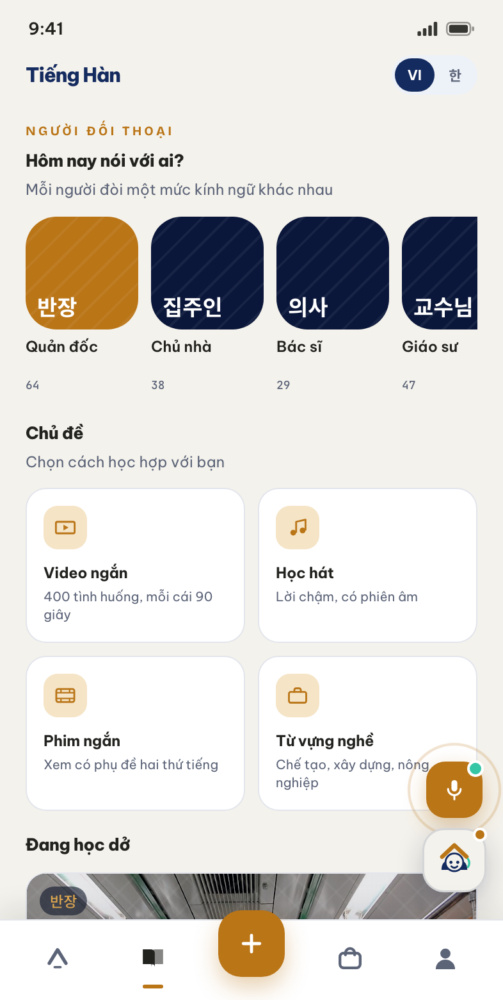
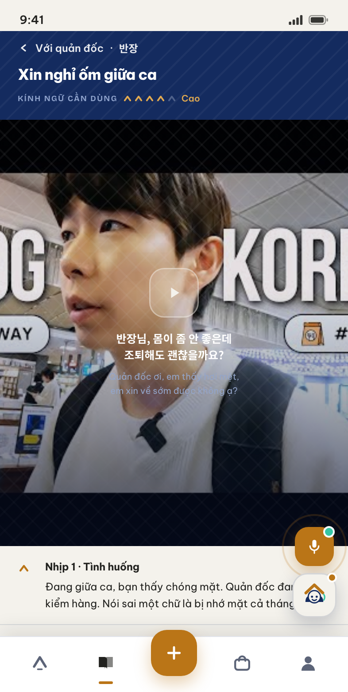
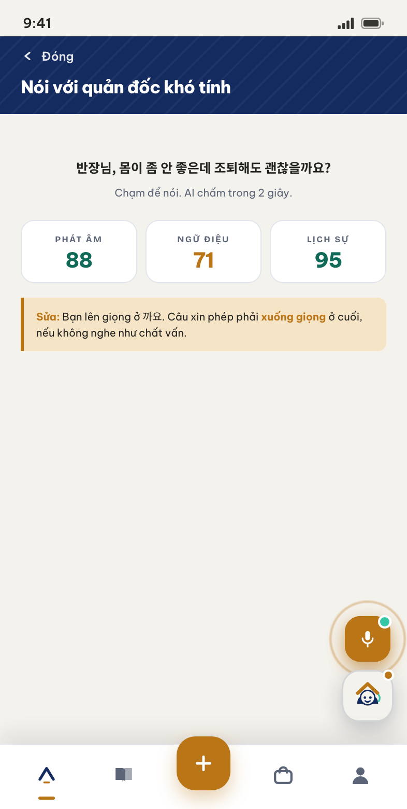
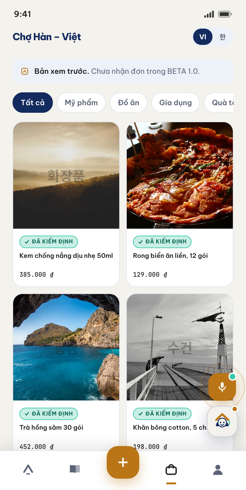
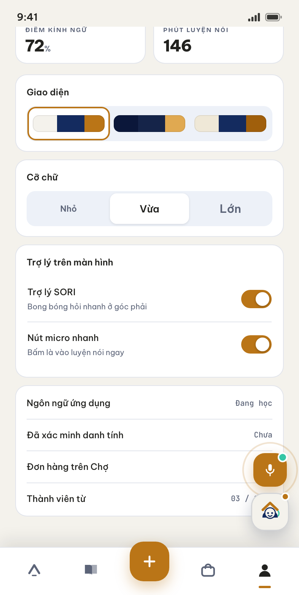
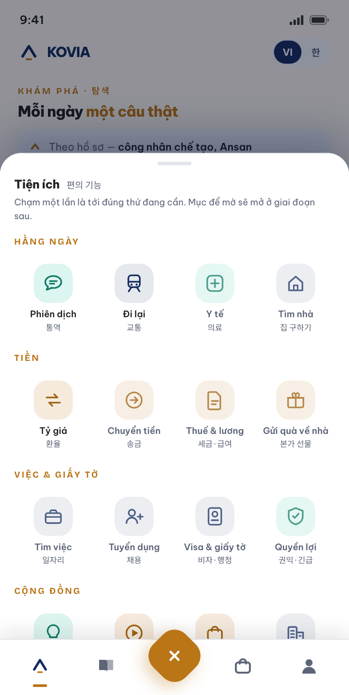
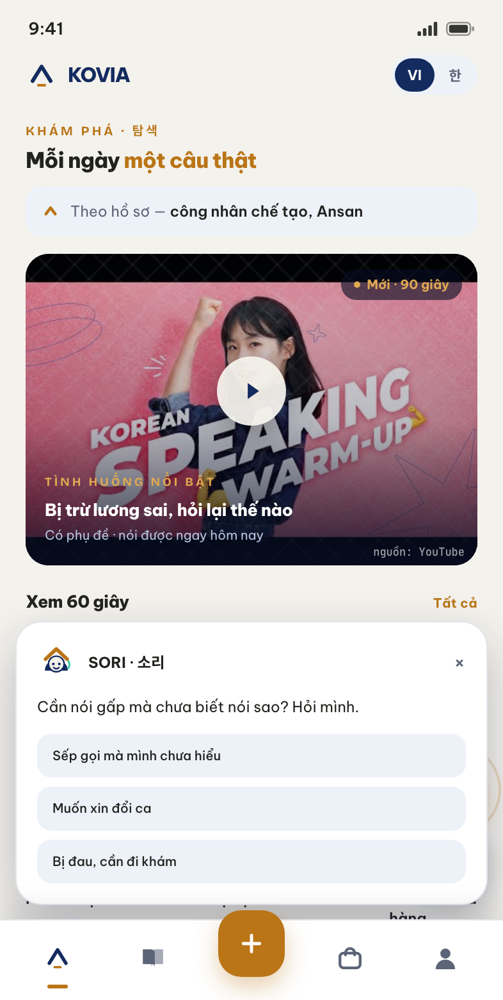

한 길 위에, 두 나라 — Một con đường, hai quê hương
Hạ tầng số của hành lang Việt – Hàn: nơi một người Việt xây dựng năng lực và uy tín để sang Hàn, và một người Hàn tìm được người, đất, hàng, giấy tờ để vào Việt Nam — trên cùng một lớp danh tính.
KOVIA không phải một app học tiếng Hàn, cũng không phải một sàn thương mại điện tử. Đó là lớp danh tính và tin cậy của hành lang Việt – Hàn, với nhiều bề mặt ứng dụng bên trên.
Hành lang Việt – Hàn hôm nay chạy trên niềm tin phi cấu trúc: nhóm Facebook, môi giới quen, “anh em giới thiệu”. Hệ quả là phí môi giới cắt cổ, lừa đảo du học và việc làm, doanh nghiệp Hàn không dám tuyển trực tiếp. Không ai đang sở hữu “hộ chiếu năng lực” — bản ghi số kiểm chứng được về một con người.
Không bán dịch vụ. Tài sản là bản ghi số về năng lực và lịch sử của một con người — thứ mà mọi mảng khác kiếm tiền phía trên nó.
Miễn phí gần như toàn bộ chiều Việt → Hàn để xây mật độ và dữ liệu; bán đắt cho chiều Hàn → Việt. Người học hôm nay là nhân sự doanh nghiệp Hàn trả tiền để tuyển ngày mai.
Mỗi năm hàng chục nghìn người Việt về nước sau 3–5 năm ở Hàn, trong khi FDI Hàn tại Việt Nam đang đói quản đốc và thông dịch. Nối vòng “đi – học – làm – về – được thuê lại”.
| Lớp | Có thể bị sao chép? | Ghi chú |
|---|---|---|
| Nội dung video | Có — trong 3 tháng | Không phải moat |
| Mô hình AI | Có — ai cũng gọi được API | Không phải moat |
| Marketplace | Có — đối thủ đốt tiền là cướp được | Không phải moat |
| Hồ sơ năng lực tích luỹ của hàng trăm nghìn người | Không | ← Đây là moat |
| Mật độ cộng đồng ở một địa bàn cụ thể | Rất khó | ← Đây là moat |
| Quan hệ với hiệp hội, trường, KCN, cơ quan | Rất khó | ← Đây là moat |
2Verified Successful Connections — số kết nối thành công đã được xác thực. Chỉ tính khi có đủ ba dấu hiệu độc lập: giao dịch qua nền tảng có bản ghi, xác nhận hai chiều từ cả hai bên, và một dấu vết bên ngoài (hợp đồng lao động, thư mời nhập học, hoá đơn, biên nhận giao hàng).
Chỉ tiêu EPS giảm mạnh nghĩa là không được đặt cược vào xuất khẩu lao động. Cầu thật đang dồn sang du học, visa E-7, và đặc biệt là việc làm tại doanh nghiệp Hàn ngay tại Việt Nam — mảng lớn hơn nhiều và không vướng giấy phép xuất khẩu lao động.
| # | Nhóm | Nỗi đau lõi | Chi trả | Ưu tiên |
|---|---|---|---|---|
| A1 | Người Việt đang ở Hàn | Tiếng Hàn sống sót, visa, y tế, thuế, chuyển tiền, cô đơn | Thấp, tần suất cao | ★★★ |
| A2 | Người Việt muốn sang Hàn | Học tiếng, chọn trường và công ty, sợ bị lừa, phí môi giới | Cao, một lần | ★★★ |
| A3 | Người học vì văn hoá | Học chán, không dùng được thật | Thấp | ★★★ (phễu) |
| B1 | Doanh nghiệp Hàn vào VN | Đọc thị trường, thuê đất và xưởng, pháp lý, phiên dịch, tuyển người | Rất cao | ★★ |
| B2 | Người Hàn sống ở VN | Tiếng Việt, nhà ở, y tế, trường học | Cao | ★ |
| C | Hộ kinh doanh, SME hai nước | Không biết bắt đầu, logistics, thanh toán, kiểm định | Theo % GMV | ★★ |
Lưu ý về A3: nhóm này thường bị coi thường vì “không có tiền”. Sai — A3 là phễu rẻ nhất và là tệp mua hàng Hàn Quốc lớn nhất. Người yêu văn hoá Hàn chính là người mua mỹ phẩm, thực phẩm và thời trang Hàn. Đây là lý do Chợ Hàn – Việt nằm ngay trong BETA chứ không đợi tới giai đoạn sau.
Nội dung thực chiến (chi phí gần 0, nhờ Portal AI)
↓
Người học và người xem
↓
Dữ liệu năng lực + hành vi
↓
Hồ sơ đã kiểm chứng (Skill Passport)
↓
Doanh nghiệp Hàn trả tiền để tuyển / mua / hợp tác
↓
Có việc thật, đơn hàng thật
↓
Người dùng tin tưởng → tự tạo nội dung → rủ bạn
↓
(quay lại đầu, mạnh hơn)
3
BETA bật ba trụ đầu và mở đầu trụ thứ tư. Các trụ còn lại là bản đồ, không phải kế hoạch tháng đầu. Nguyên tắc kỷ luật số một: không mở marketplace nào trước khi lớp nội dung và lớp danh tính đủ dày.
| Trụ | Tên | Mô tả ngắn | Giai đoạn |
|---|---|---|---|
| P1 | Learn — Tiếng Hàn thực chiến | Video Scene + AI luyện nói + gia sư | BETA |
| P2 | Culture — Văn hoá & trải nghiệm | Mini-doc, giải mã văn hoá, cộng đồng, offline | BETA |
| P3 | Market — Chợ Hàn – Việt | Hàng Hàn về Việt, người bán được kiểm định | BETA |
| P4 | Store — Cửa hàng online | Chủ shop tự mở cửa hàng, tự dịch, tự vận hành | Cuối BETA |
| P5 | Passport — Hồ sơ năng lực | Danh tính + năng lực + lịch sử + bảo lãnh cộng đồng | GĐ 2 |
| P6 | Rights — Quyền lợi & Khẩn cấp | Visa, y tế, thuế, tranh chấp lao động, chống lừa đảo | GĐ 2 |
| P7 | Career — Việc làm & du học | Ưu tiên việc làm tại doanh nghiệp Hàn ở Việt Nam | GĐ 2–3 |
| P8 | Business — Hạ cánh mềm | Landing service, phiên dịch, thẩm định, tuyển dụng cho SME Hàn | GĐ 2–3 |
| P9 | Return — Mạng lưới hồi hương | Người về nước ↔ doanh nghiệp FDI Hàn tại Việt Nam | GĐ 4 |
Scene phân loại theo quan hệ quyền lực, không theo chủ đề ngữ pháp: với cấp trên, với đồng nghiệp, với dịch vụ, với nhà trọ, với nhà trường, với gia đình Hàn, với cơ quan. Sai kính ngữ nguy hiểm hơn sai ngữ pháp. Mỗi Scene là một video dọc 60–90 giây theo công thức năm nhịp:
Nhịp 1 — HOOK (0–5s) : một câu tiếng Hàn gây tò mò / một tình huống căng Nhịp 2 — KEY PHRASE (5–25s): 1–3 mẫu câu, chậm, có phụ đề song ngữ Nhịp 3 — CULTURE (25–50s) : vì sao người Hàn nói vậy, sai thì hậu quả gì Nhịp 4 — PRACTICE (50–75s) : người xem nói theo, có khoảng trống để lặp Nhịp 5 — ACTION (75–90s) : luyện với AI trong app / xem Scene tiếp theo
CỬA 1: Zalo Mini App CỬA 2: KakaoTalk Channel CỬA 3: Web / PWA
(chủ lực Việt Nam) (chủ lực Hàn Quốc, GĐ 2) (SEO, B2B, desktop)
│ │ │
└────────────────────────────┼──────────────────────────┘
│
══════ MỘT BỘ NÃO DUY NHẤT ══════
Danh tính · Đồng ý (consent) · Hồ sơ · CRM
Đặt lịch · Thanh toán · Đơn hàng · Nội dung
Kho tri thức (RAG) · Nhật ký
4
Tám màn hình chính của bản dựng BETA 1.0 — toàn bộ song ngữ Việt – Hàn, ba bộ giao diện và ba cỡ chữ.

Feed cá nhân hoá theo hồ sơ: Scene nổi bật, hàng cuộn 60 giây, học qua bài hát, tin ngắn.

Chọn người đối thoại trước, không chọn bài — mỗi người một mức kính ngữ.

Tình huống, mẫu câu, giải mã văn hoá, luyện nói, ghi lại lần dùng thật.

Chấm phát âm, ngữ điệu và mức độ lịch sự, kèm lời sửa cụ thể.

Mọi mặt hàng đều có nhãn “đã kiểm định”. Đấu bằng sự chắc chắn, không đấu giá rẻ.

Tình huống đã xong, lần dùng thật, điểm kính ngữ — nền cho Skill Passport ở giai đoạn 2.

Mười sáu tiện ích, bốn nhóm. Mục để mờ là phần mở ở giai đoạn sau.

Hỏi nhanh khi cần nói gấp. SORI là bạn đồng hành, và luôn nói rõ mình là AI.
Ảnh chụp từ bản dựng tương tác chạy thật trong trình duyệt, không phải ảnh thiết kế tĩnh. Dữ liệu hiển thị là minh hoạ; ảnh sản phẩm và video dùng nguồn tạm để dựng bố cục.
5Ba màn dưới đây là nơi luận điểm sản phẩm biến thành thao tác cụ thể. Nếu chỉ xem được ba màn, hãy xem ba màn này.
Mọi app học tiếng đều bắt đầu bằng “Bài 1: Bảng chữ cái”. Ở đây câu hỏi đầu tiên là “Hôm nay nói với ai?” — vì cùng một câu nói với quản đốc và với bạn cùng phòng là hai câu khác nhau, và nói nhầm thì hậu quả không nằm ở điểm số.
AI không chỉ chấm phát âm và ngữ điệu mà chấm cả lịch sự, kèm lời sửa cụ thể: “Bạn lên giọng ở 까요. Câu xin phép phải xuống giọng ở cuối, nếu không nghe như chất vấn.” Đây là thứ một app luyện thi không làm.
Bảng Tiện ích là chỗ nền tảng thừa nhận người dùng không chỉ cần học: họ cần phiên dịch, tra tỷ giá, tìm nhà, hỏi visa, tìm việc. Màu icon phân theo bản chất việc — vàng là động tới tiền, xanh đêm là cần giấy tờ.
Chữ Hàn cao hơn chữ Latin nên phải đặt line-height riêng. Mọi giao diện đều kiểm thử ở cả hai ngôn ngữ trước khi duyệt.
Có bộ “Ca Đêm” nền tối cho người làm ca và đọc trên đường; cỡ chữ Lớn cho người dùng trên 40 tuổi.
SORI và nút micro đều tắt được trong mục Tôi. Trợ lý nổi che nội dung là phiền, và người dùng phải có quyền quyết định.
Chợ ghi rõ “Bản xem trước — chưa nhận đơn trong BETA 1.0”. Tiện ích chưa mở thì để mờ và không bấm được.
Portal không phải công cụ rời — nó là backend của chính ứng dụng người dùng: chung danh tính, chung phân quyền, chung kho dữ liệu. Đây là vũ khí trung tâm của chiến lược quảng cáo bằng 0.
Nghe xu hướng từ nguồn công khai và API chính thức, xếp chủ đề theo điểm nhu cầu.
Sinh kịch bản đúng công thức năm nhịp, đối chiếu kho tri thức đã duyệt. Người thật duyệt trước khi sản xuất.
Phụ đề hai ngôn ngữ, lồng tiếng, thumbnail, cắt đa tỷ lệ. Tuyệt đối không dùng tài sản có bản quyền.
Một tài sản gốc sinh 8–12 biến thể, mỗi nền tảng một cách viết hook, lịch đăng theo hai múi giờ.
Phân loại bình luận thành bốn luồng; hỏi về visa, pháp lý và y tế luôn chuyển người thật.
Biến bình luận hay thành Scene mới, đánh giá đơn hàng thành nội dung bán hàng.
Truy vết bài đăng → Zalo OA → đăng ký → học → mua. Bảng ROI theo từng Scene.
Bộ luật nội dung, nhật ký kiểm toán đầy đủ, nút dừng khẩn cấp gỡ cả chiến dịch trong 5 phút.
| Không có Portal | Có Portal | |
|---|---|---|
| Nội dung mỗi tuần với đội 3 người | 8 – 12 mảnh | 45 – 60 mảnh |
| Thời gian từ ý tưởng đến đăng | 3 – 5 ngày | 6 – 12 giờ |
| Chi phí mỗi mảnh nội dung | 400 – 800 nghìn VND | 60 – 120 nghìn VND |
| Số nền tảng phủ | 2 – 3 | 5 – 6 |
Về tuân thủ xuyên biên giới: dữ liệu người dùng tại Hàn lưu ở Hàn theo PIPA, dữ liệu người dùng tại Việt Nam lưu tại Việt Nam theo Nghị định 13/2023. Đồng ý nhận thông báo, đồng ý marketing và đồng ý chuyển dữ liệu xuyên biên giới là ba đồng ý riêng biệt, không gộp.
7BETA không phải phiên bản thu nhỏ của sản phẩm cuối. BETA là cỗ máy thu hút và giữ chân, chạy với ngân sách quảng cáo bằng 0, để trả lời ba câu hỏi sống còn.
Đo bằng retention D7/D30 — không đo bằng lượt xem.
Đo bằng đơn hàng Chợ đầu tiên và buổi gia sư đầu tiên.
Đo bằng tỷ lệ chuyển từ “đất thuê” sang “đất của mình”.
| Nhóm | Chỉ số | Mục tiêu |
|---|---|---|
| Thu hút | Tổng người theo dõi trên 5 nền tảng | 150.000 |
| CAC hữu cơ | < 3.000 VND / người theo dõi | |
| Sở hữu | Người theo dõi Zalo OA | 30.000 |
| Tài khoản đăng ký trên nền tảng | 40.000 | |
| Gắn kết | Người học hoạt động hằng tuần | 5.000 |
| Retention D30 | > 22% | |
| Giao dịch | Đơn hàng Chợ mỗi tháng | 500 |
| GMV mỗi tháng | 400 – 600 triệu VND | |
| Tin cậy | Tỷ lệ khiếu nại đơn hàng | < 2% |
| GĐ | Thời gian | Tên | Mục tiêu chính |
|---|---|---|---|
| 0 | T1 – T2 | Chuẩn bị | Thẩm định, thương hiệu, Portal v0, khởi động pháp nhân |
| 1 | T3 – T11 | BETA / Pilot | Web-App + Zalo OA + website ba ngôn ngữ; Learn, Culture, Chợ v1, Portal, Store Builder bản mời |
| 2 | T12 – T18 | Tin cậy & Mở rộng | Pháp nhân Hàn, Skill Passport, Rights Center, gia sư mở, Chợ mở, Kakao |
| 3 | T19 – T24 | Chiều Hàn → Việt | B2B landing scale, tuyển dụng, ID Graph, mở chiều hàng Việt → Hàn, hoà vốn vận hành |
| 4 | T25 – T30 | Hạ tầng hành lang | Mạng hồi hương, đối tác tài chính, nghiên cứu mở Nhật và Đài |
Điều kiện dừng ở Giai đoạn 0: nếu 30 video thử nghiệm không đạt benchmark giữ chân thì không bước sang BETA — quay lại sửa định dạng nội dung. Đây là điểm kiểm soát rủi ro rẻ nhất của toàn đề án.
8Nguyên tắc phân bổ: dòng doanh thu chiều Hàn → Việt trợ cấp cho toàn bộ sản phẩm miễn phí ở chiều Việt → Hàn. Đây là xương sống tài chính của mô hình.
| # | Dòng doanh thu | Bật khi | Biên LN | Ghi chú |
|---|---|---|---|---|
| 1 | B2B đào tạo văn hoá & ngôn ngữ | T6 | Rất cao | Dễ nhất, tiền mặt sớm, không cần quy mô |
| 2 | Landing service cho SME Hàn | T9 | Rất cao | 5.000–50.000 USD/khách; 60–100 khách/năm nuôi cả hệ thống |
| 3 | Hoa hồng Chợ | T6 | Trung | 8–15% ở nấc đầu, giảm dần khi mở rộng |
| 4 | Ăn chia gia sư & khoá học | T7 | Trung | 20–30% |
| 5 | Thuê bao Pro cho người học | T9 | Cao | 99–199 nghìn VND/tháng |
| 6 | SaaS Store Builder | T9 | Cao | Thuê bao + % giao dịch |
| 7 | Tuyển dụng cho DN Hàn tại VN | T14 | Cao | Phí theo tuyển thành công |
Đọc kinh tế đơn vị thế nào: LTV người học trả phí khoảng 750 nghìn VND, LTV người mua Chợ năm đầu khoảng 270 nghìn VND — mỏng. Nhưng LTV một khách B2B landing là 11.000 – 30.000 USD. Kinh tế đơn vị B2C chỉ hợp lý khi được nhìn như chi phí xây tài sản dữ liệu và mật độ cộng đồng — thứ tạo ra khách B2B và tạo ra moat. Đường tới hoà vốn: T12 gần hoà vốn vận hành, T18 hoà vốn ổn định, T24 biên lợi nhuận dương.
Kiến trúc hai tầng: KOVIA trung tính, đọc tự nhiên ở cả ba ngôn ngữ (코비아), dùng cho web, hợp đồng, dashboard doanh nghiệp và hồ sơ gọi vốn. HANGIL · 한길 — “một con đường”, đồng thời gợi “đường sang Hàn” — dùng cho kênh cộng đồng và mọi thứ chạm tới người học.
Biểu tượng là con dấu: khung vuông bo góc, bên trong là mũi chóp hướng lên và một vạch vàng nằm ngang. Khung dấu đọc là đã xác nhận; mũi chóp là mái che, ngọn núi, nón lá, phụ âm ㅅ và mũi tên đi lên; vạch vàng là nền đất và gạch xác nhận. Cách xếp hình đi theo đúng logic ghép âm tiết tiếng Hàn — phụ âm trên, nguyên âm ngang dưới, gói trong một ô vuông. Hình vẽ tự nó nói ra thứ đang bán: niềm tin có thể kiểm chứng.
| Vai trò | Màu | Mã | Dùng ở đâu |
|---|---|---|---|
| Chủ đạo | Xanh đêm | #142B5F | Nền tảng, B2B, chữ tiêu đề |
| Nhấn ấm | Vàng lúa | #BA7517 | Kênh cộng đồng, nút hành động, HANGIL |
| AI / tương tác | Bạc hà | #35C6A5 | Bề mặt AI, trạng thái tích cực |
Bộ chữ: Be Vietnam Pro cho Latin và tiếng Việt, Pretendard cho tiếng Hàn. Nhân vật SORI · 소리 giữ vai bạn đồng hành; mái che trên đầu SORI chính là mũi chóp của biểu tượng, nên nhân vật và logo thuộc cùng một thế giới.
9Tuyển dụng và du học sang Hàn có thu phí vướng giấy phép xuất khẩu lao động. BETA không chạm vào.
Không hứa visa, việc làm, thu nhập. Vi phạm một lần là mất uy tín của cả lớp danh tính.
Không clip phim Hàn, không MV K-pop, không nhạc có bản quyền. Mất kênh là mất toàn bộ chiến lược quảng cáo bằng 0.
Xây trên Facebook, TikTok và YouTube là xây trên đất thuê. Một lần đổi thuật toán hoặc một lần bị khoá kênh là mất tất cả. Nguyên tắc bắt buộc: mọi nội dung phải có đường dẫn về đất của mình — Zalo OA, tài khoản trên nền tảng, email và số điện thoại. KPI kỷ luật: tỷ lệ chuyển đổi từ đất thuê sang đất của mình ít nhất 8% mỗi tháng. Nếu người theo dõi tăng mà Zalo OA không tăng thì đó là tăng trưởng ảo.
| Tài liệu | Nội dung |
|---|---|
| Trang tổng hợp | Bản giới thiệu trực tuyến, có hai bản demo tương tác mở thẳng trong trình duyệt |
| KOVIA Branding | Sổ tay nhận diện song ngữ Việt – Hàn: bốn biến thể logo, vùng an toàn, quy tắc thu nhỏ, bảng màu, bộ chữ, SORI, danh sách file cần xuất |
| KOVIA Tổng quan | Đề án v2.5 đầy đủ, 17 chương: chiến lược, thị trường, kiến trúc sản phẩm, BETA, Portal, Chợ, kỹ thuật, lộ trình 30 tháng, tài chính, rủi ro pháp lý |
| Chi tiết Phase 1 | Kế hoạch thực thi BETA chín tháng: năm nhóm việc, ba nhịp, đường găng, lịch đầu ra theo tháng, bảng chỉ số, cửa vượt sang giai đoạn 2 |
| Demo KOVIA APP | Bản dựng tương tác của ứng dụng người dùng — tám màn hình trong tài liệu này |
| Demo Management Portal | Bản dựng tương tác của hệ thống vận hành: luồng sản xuất bảy chặng, hàng đợi phê duyệt, nguồn dữ liệu, quản trị |
Toàn bộ tài liệu và hai bản demo đang mở công khai tại
koalaland-workplace.github.io/KOVIA_demo
KOVIA · HANGIL 한길 — Giới thiệu tổng quát · Đề án v2.5 · Bộ nhận diện v2.0 · 27.07.2026. Tài liệu để nghiên cứu và góp ý, không phải hồ sơ chào bán. Mọi số liệu là ước tính tại thời điểm lập đề án, không phải cam kết.
10